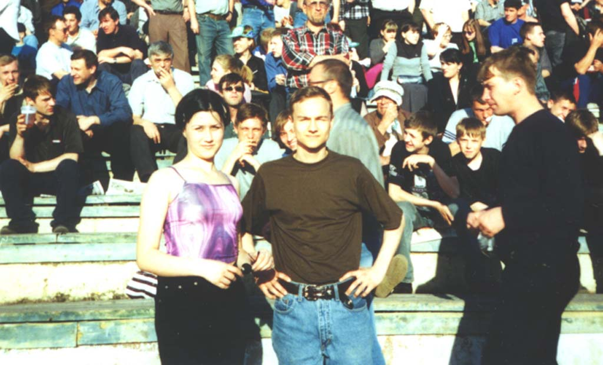
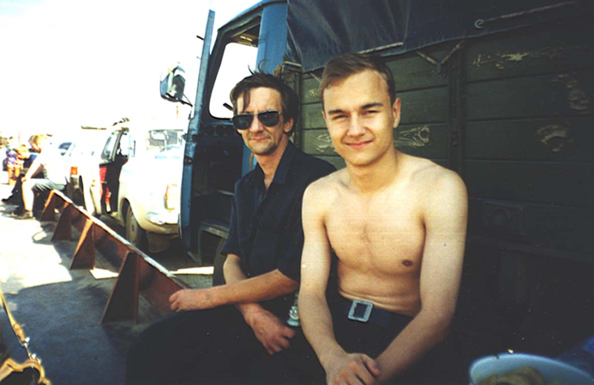
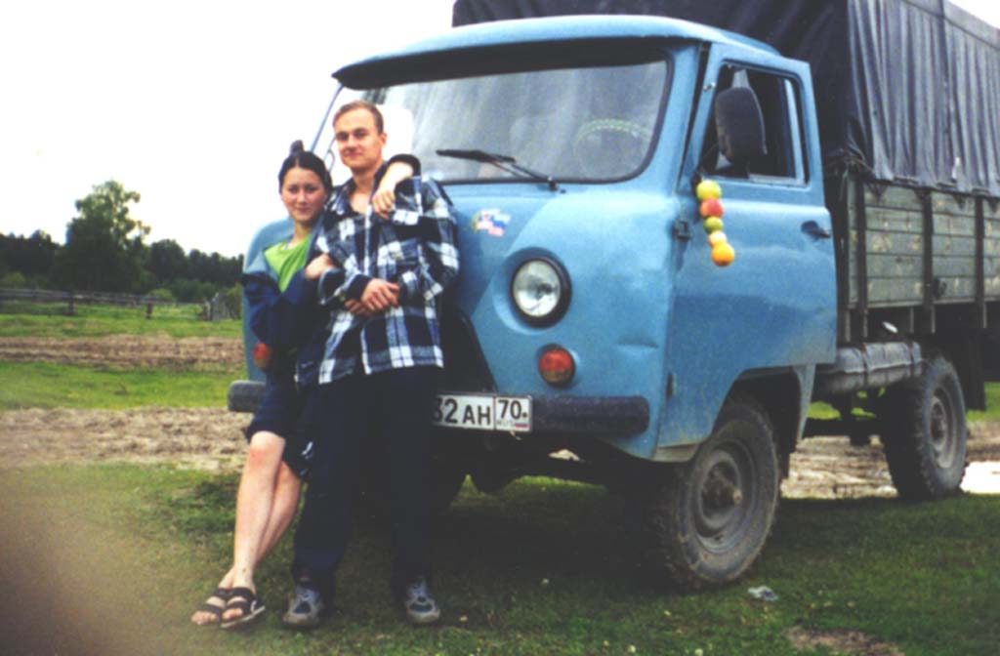

| Фотоальбом |
|  Лето 2001 года. Томск, стадион труд. На снимке я и моя сестра Танюха. |  Июль 2001. паром Каргсок-Александрово. На снимке я и мой любимый папа. |  28 июля 2001 года. Новый васюган. На берегу реки (она перед нами :0). Я, Танька и наша бибилька. |